전기기사 (2020-06-06 기출문제)
1과목: 전기자기학
1. 반자성체의 비투자율(μr) 값의 범위는?
- μr＝1
- μr＜1
- μr＞1
- μr＝0
(정답률: 81%)

2. 자기회로에서 자기저항의 크기에 대한 설명으로 옳은 것은?
- 자기회로의 길이에 비례
- 자기회로의 단면적에 비례
- 자성체의 비투자율에 비례
- 자성체의 비투자율의 제곱에 비례
(정답률: 81%)
3. 자기 인덕턴스와 상호 인덕턴스와의 관계에서 결합계수 k의 범위는?
- 0 ≤ k ≤ 1/2
- 0 ≤ k ≤ 1
- 1 ≤ k ≤ 2
- 1 ≤ k ≤ 10
(정답률: 86%)
4. 전위함수 V＝x2＋y2(V)일 때 점 (3, 4)(m)에서의 등전위선의 반지름은 몇 m이며, 전기력선 방정식은 어떻게 되는가?
- 등전위선의 반지름 : 3, 전기력선 방정식 :
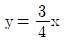
- 등전위선의 반지름 : 4, 전기력선 방정식 :
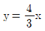
- 등전위선의 반지름 : 5, 전기력선 방정식 :
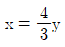
- 등전위선의 반지름 : 5, 전기력선 방정식 :
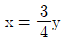
(정답률: 67%)
5. 공기 중에 있는 무한히 긴 직선 도선에 10 A의 전류가 흐르고 있을 때 도선으로부터 2m 떨어진 점에서의 자속밀도는 몇 Wb/m2인가?
- 10-5
- 0.5×10-6
- 10-6
- 2×10-6
(정답률: 63%)
6. 정전계 해석에 관한 설명으로 틀린 것은?
- 포아송 방정식은 가우스 정리의 미분형으로 구할 수 있다.
- 도체 표면에서의 전계의 세기는 표면에 대해 법선 방향을 갖는다.
- 라플라스 방정식은 전극이나 도체의 형태에 관계없이 체적 전하밀도가 0인 모든 점에서 ∇2V＝0을 만족한다.
- 라플라스 방정식은 비선형 방정식이다.
(정답률: 78%)
7. 10mm의 지름을 가진 동선에 50A의 전류가 흐르고 있을 때 단위시간 동안 동선의 단면을 통과하는 전자의 수는 약 몇 개인가?
- 7.85×1016
- 20.45×1015
- 31.21×1019
- 50×1019
(정답률: 68%)
8. 유전율이 ε1, ε2(F/m)인 유전체 경계면에 단위 면적당 작용하는 힘의 크기는 몇 N/m2인가? (단, 전계가 경계면에 수직인 경우이며, 두 유전체에서의 전속밀도는 D1＝D2＝D(C/m2)이다.)
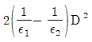
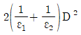
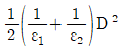
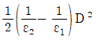
(정답률: 81%)
9. 반지름 r(m)인 무한장(원통형) 도체에 전류가 균일하게 흐를 때 도체 내부에서 자계의 세기(AT/m)는?
- 원통 중심축으로부터 거리에 비례한다.
- 원통 중심축으로부터 거리에 반비례한다.
- 원통 중심축으로부터 거리의 제곱에 비례한다.
- 원통 중심축으로부터 거리의 제곱에 반비례한다.
(정답률: 35%)
10. 전계 및 자계의 세기가 각각 E(V/m), H(AT/m)일 때, 포인팅 벡터 P(W/m2)의 표현으로 옳은 것은?
- P＝1/2E×H
- P＝E rot H
- P＝E×H
- P＝H rot E
(정답률: 84%)
11. 그림과 같이 내부 도체구 A에 ＋Q(C), 외부 도체구 B에 –Q(C)를 부여한 동심 도체구 사이의 정전용량 C(F)는?
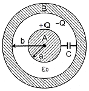
- 4πε0
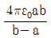
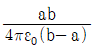
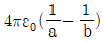
(정답률: 77%)
12. 비유전율 εr이 4인 유전체의 분극률은 진공의 유전율의 몇 배인가?
- 1
- 3
- 9
- 12
(정답률: 76%)
13. 면적이 매우 넓은 두 개의 도체판을 d(m) 간격으로 수평하게 평행 배치하고, 이 평행 도체 판 사이에 놓인 전자가 정지하고 있기 위해서 그 도체 판 사이에 가하여야할 전위차(V)는? (단, g는 중력 가속도이고, m은 전자의 질량이고, e는 전자의 전하량이다.)
- mged
- ed/mg
- mgd/e
- mge/d
(정답률: 58%)
14. 진공 중 3m 간격으로 두 개의 평행판 무한평판 도체에 각각 ＋4C/m2, -4C/m2의 전하를 주었을 때, 두 도체 간의 전위차는 약 몇 V인가?
- 1.5×1011
- 1.5×1012
- 1.36×1011
- 1.36×1012
(정답률: 42%)
15. 평등자계 내에 전자가 수직으로 입사하였을 때 전자의 운동에 대한 설명으로 옳은 것은?
- 원심력은 전자속도에 반비례한다.
- 구심력은 자계의 세기에 반비례한다.
- 원운동을 하고, 반지름은 자계의 세기에 비례한다.
- 원운동을 하고, 반지름은 전자의 회전속도에 비례한다.
(정답률: 60%)
16. 자속밀도 B(Wb/m2)의 평등 자계 내에서 길이 ℓ(m) 인 도체 ab가 속도 v(m/s)로 그림과 같이 도선을 따라서 자계와 수직으로 이동할 때, 도체 ab에 의해 유기된 기전력의 크기 e(V)와 폐회로 abcd 내 저항 R에 흐르는 전류의 방향은? (단, 폐회로 abcd 내 도선 및 도체의 저항은 무시한다.)
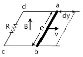
- e＝Blv, 전류방향 : c→d
- e＝Blv, 전류방향 : d→c
- e＝Blv2, 전류방향 : c→d
- e＝Blv2, 전류방향 : d→c
(정답률: 67%)
17. 자기유도계수 L의 계산 방법이 아닌 것은? (단, N : 권수, ø : 자속(Wb), I : 전류(A), A : 벡터퍼텐셜(Wb/m), i : 전류밀도(A/m2), B(Wb/m2), H : 자계의 세기(AT/m)이다.
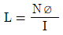
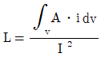
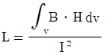
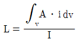
(정답률: 66%)
18. 면적이 S(m2)이고 극간의 거리가 d(m)인 평행판 콘덴서에 비유전율이 εr인 유전체를 채울 때 정전용량 (F)은? (단, ε0는 진공의 유전율이다.)
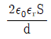
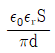
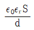
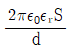
(정답률: 76%)
19. 그림에서 N＝1000회, l＝100㎝, S＝10cm2인 환상 철심의 자기 회로에 전류 I＝10(A)를 흘렸을 때 축적되는 자계 에너지는 몇 J인가? (단, 비투자율 μr＝100이다.)
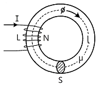
- 2π×10-3
- 2π×10-2
- 2π×10-1
- 2π
(정답률: 58%)
20. 20℃에서 저항의 온도계수가 0.002인 니크롬선의 저항이 100Ω이다. 온도가 60℃로 상승되면 저항은 몇 Ω이 되겠는가?
- 108
- 112
- 115
- 120
(정답률: 67%)
2과목: 전력공학
21. 송배전 선로에서 선택지락계전기(SGR)의 용도는?
- 다회선에서 접지 고장 회선의 선택
- 단일 회선에서 접지 전류의 대소 선택
- 단일 회선에서 접지 전류의 방향 선택
- 단일 회선에서 접지 사고의 지속 시간 선택
(정답률: 78%)
22. 3상 3선식에서 전선 한 가닥에 흐르는 전류는 단상 2선식의 경우의 몇 배가 되는가? (단, 송전전력, 부하역률, 송전 거리, 전력손실 및 선간전압이 같다.)
- 1/√3
- 2/3
- 3/4
- 4/9
(정답률: 43%)
23. 단로기에 대한 설명으로 틀린 것은?
- 소호장치가 있어 아크를 소멸 시킨다.
- 무부하 및 여자전류의 개폐에 사용된다.
- 사용 회로수에 의해 분류하면 단투형과 쌍투형이 있다.
- 회로의 분리 또는 계통의 접속 변경 시 사용한다.
(정답률: 76%)
24. 중성점 직접접지방식의 발전기가 있다. 1선 지락 사고 시지락전류는? (단, Z1, Z2, Z3는 각각 정상, 역상, 영상 임피던스이며, Ea는 지락된 상의 무부하 기전력이다.
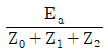
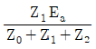
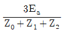
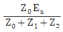
(정답률: 77%)
25. 정격전압 7.2kV, 정격차단용량 100MVA인 3상 차단기의 정격 차단전류는 약 몇 kA인가?
- 4
- 6
- 7
- 8
(정답률: 70%)
26. 일반 회로정수가 같은 평형 2회선에서 A, B, C, D는 각각 1회선의 경우의 몇 배로 되는가?
- A : 2배, B : 2배, C : 1/2배, D : 1배
- A : 1배, B : 2배, C : 1/2배, D : 1배
- A : 1배, B : 1/2배, C : 2배, D : 1배
- A : 1배, B : 1/2배, C : 2배, D : 2배
(정답률: 60%)
27. 전선의 표피 효과에 대한 설명으로 알맞은 것은?
- 전선이 굵을수록, 주파수가 높을수록 커진다.
- 전선이 굵을수록, 주파수가 낮을수록 커진다.
- 전선이 가늘수록, 주파수가 높을수록 커진다.
- 전선이 가늘수록, 주파수가 낮을수록 커진다.
(정답률: 74%)
28. 전력설비의 수용률을 나타낸 것은?
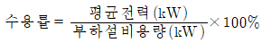
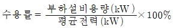
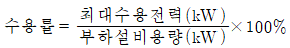
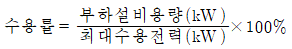
(정답률: 74%)
29. 30,000kW의 전력을 51㎞ 떨어진 지점에 송전하는데 필요한 전압은 약 몇 kV인가? (단, Still의 식에 의하여 산정한다.)
- 22
- 33
- 66
- 100
(정답률: 52%)
30. 증기터빈 출력을 P(kW), 증기량을 W(t/h), 초압 및 배기의 증기 엔탈피를 각각 i0, i1(kcal/kg)이라 하면 터빈의 효율 ηT(%)는?
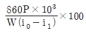
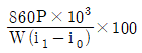
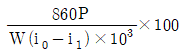
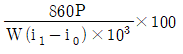
(정답률: 52%)
31. 다음 중 송전계통의 절연협조에 있어서 절연레벨이 가장 낮은 기기는?
- 피뢰기
- 단로기
- 변압기
- 차단기
(정답률: 71%)
32. 수전단의 전력원 방정식이 Pr2＋(Qr＋400)2=250000으로 표현되는 전력계통에서 조상설비 없이 전압을 일정 하게 유지하면서 공급할 수 있는 부하전력은? (단, 부하는 무유도성이다.)
- 200
- 250
- 300
- 350
(정답률: 73%)
33. 송전선로에서 가공지선을 설치하는 목적이 아닌 것은?
- 뇌(雷)의 직격을 받을 경우 송전선 보호
- 유도뢰에 의한 송전선의 고전위 방지
- 통신선에 대한 전자유도장해 경감
- 철탑의 접지저항 경감
(정답률: 75%)
34. 고장 즉시 동작하는 특성을 갖는 계전기는?
- 순시 계전기
- 정한시 계전기
- 반한시 계전기
- 반한시성 정한시 계전기
(정답률: 81%)
35. 댐의 부속설비가 아닌 것은?
- 수로
- 수조
- 취수구
- 흡출관
(정답률: 73%)
36. 4단자 정수 A＝0.9918＋j0.0042, B＝34.17＋j50.38, C＝(-0.006＋j3247)×10-4인 송전선로의 송전단에 66kV를 인가하고 수전단을 개방하였을 때 수전단 선간 전압은 약 몇 kV인가?
- 66.55/√3
- 62.5
- 62.5/√3
- 66.55
(정답률: 54%)
37. 3상 배전선로의 말단에 역률 60%(늦음), 60kW의 평형 3상 부하가 있다. 부하점에 부하와 병렬로 전력용콘덴서를 접속하여 선로손실을 최소로 하고자 할 때 콘덴서 용량(kVA)은? (단, 부하단의 전압은 일정하다.)
- 40
- 60
- 80
- 100
(정답률: 61%)
38. 화력발전소에서 절탄기의 용도는?
- 보일러에 공급되는 급수를 예열한다.
- 포화증기를 과열한다.
- 연소용 공기를 예열한다.
- 석탄을 건조한다.
(정답률: 72%)
39. 변전소에서 비접지 선로의 접지보호용으로 사용되는 계전기에 영상전류를 공급하는 것은?
- CT
- GPT
- ZCT
- PT
(정답률: 80%)
40. 사고, 정전 등의 중대한 영향을 받는 지역에서 정전과 동시에 자동적으로 예비전원용 배전선로로 전환하는 장치는?
- 차단기
- 리클로저(Recloser)
- 섹셔널라이저(Sectionalizer)
- 자동부하 전환개폐기(Auto Load Transfer Switch)
(정답률: 73%)
3과목: 전기기기
41. 3상 20,000kVA인 동기발전기가 있다. 이 발전기는 60㎐일 때는 200rpm, 50㎐일 때는 약 167rpm으로 회전한 다. 이 동기발전기의 극수는?
- 18극
- 36극
- 54극
- 72극
(정답률: 75%)
42. 전원전압이 100V인 단상 전파정류제어에서 점호각이 30°일 때 직류 평균전압은 약 몇 V인가?
- 54
- 64
- 84
- 94
(정답률: 51%)
43. 단자전압 110V, 전기자 전류 15 A, 전기자 회로의 저항 2Ω, 정격속도 1800rpm으로 전부하에서 운전하고 있는 직류 분권전동기의 토크는 약 몇 Nㆍm인가?
- 6.0
- 6.4
- 10.08
- 11.14
(정답률: 42%)
44. 단상 유도전동기의 분상 기동형에 대한 설명으로 틀린 것은?
- 보조권선은 높은 저항과 낮은 리액턴스를 갖는다.
- 주권선은 비교적 낮은 저항과 높은 리액턴스를 갖는다.
- 높은 토크를 발생시키려면 보조권선에 병렬로 저항을 삽입한다.
- 전동기가 기동하여 속도가 어느 정도 상승하면 보조 권선을 전원에서 분리해야 한다.
(정답률: 57%)
45. 직류발전기에 P(Nㆍm/s)의 기계적 동력을 주면 전력은 몇 W로 변환되는가? (단, 손실은 없으며, Ia는 전기자 도체의 전류, e는 전기자 도체의 유기기전력, Z는 총도체수이다.)
- P=iaeZ
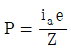
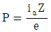
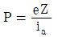
(정답률: 55%)
46. 용량 1kVA, 3000/200V의 단상변압기를 단권변압기로 결선해서 3000/3200V의 승압기로 사용할 때 그 부하 용량(kVA)은?
- 1/16
- 1
- 15
- 16
(정답률: 54%)
47. 유도전동기를 정격상태로 사용 중, 전압이 10 % 상승할 때 특성변화로 틀린 것은? (단, 부하는 일정토크라고 가정 한다.)
- 슬립이 작아진다.
- 역률이 떨어진다.
- 속도가 감소한다.
- 히스테리시스손과 와류손이 증가한다.
(정답률: 49%)
48. 단상 유도전동기의 기동 시 브러시를 필요로 하는 것은?
- 분상 기동형
- 반발 기동형
- 콘덴서 분상 기동형
- 셰이딩 코일 기동형
(정답률: 61%)
49. 스텝모터에 대한 설명으로 틀린 것은?
- 가속과 감속이 용이하다.
- 정ㆍ역 및 변속이 용이하다.
- 위치제어 시 각도 오차가 작다.
- 브러시 등 부품수가 많아 유지보수 필요성이 크다.
(정답률: 72%)
50. 직류전동기의 워드레오나드 속도제어 방식으로 옳은 것은?
- 전압제어
- 저항제어
- 계자제어
- 직병렬제어
(정답률: 60%)
51. 출력이 20kW인 직류발전기의 효율이 80 % 이면 전 손실은 약 몇 kW인가?
- 0.8
- 1.25
- 5
- 45
(정답률: 57%)
52. 전압변동률이 작은 동기발전기의 특성으로 옳은 것은?
- 단락비가 크다.
- 속도변동률이 크다.
- 동기 리액턴스가 크다.
- 전기자 반작용이 크다.
(정답률: 69%)
53. 변압기의 %Z가 커지면 단락전류는 어떻게 변화하는가?
- 커진다.
- 변동 없다.
- 작아진다.
- 무한대로 커진다.
(정답률: 68%)
54. 단권변압기의 설명으로 틀린 것은?
- 분로권선과 직렬권선으로 구분된다.
- 1차권선과 2차권선의 일부가 공동으로 사용된다.
- 3상에는 사용할 수 없고 단상으로만 사용한다.
- 분로권선에서 누설자속이 없기 때문에 전압변동률이 작다.
(정답률: 69%)
55. 도통(on)상태에 있는 SCR을 차단(off)상태로 만들기 위해서는 어떻게 하여야 하는가?
- 게이트 펄스전압을 가한다.
- 게이트 전류를 증가시킨다.
- 게이트 전압이 부(-)가 되도록 한다.
- 전원전압의 극성이 반대가 되도록 한다.
(정답률: 54%)
56. 동기전동기의 공급전압과 부하를 일정하게 유지하면서 역률을 1로 운전하고 있는 상태에서 여자전류를 증가시키면 전기자전류는?
- 앞선 무효전류가 증가
- 앞선 무효전류가 감소
- 뒤진 무효전류가 증가
- 뒤진 무효전류가 감소
(정답률: 63%)
57. 계자권선이 전기자에 병렬로만 연결된 직류기는?
- 분권기
- 직권기
- 복권기
- 타여자기
(정답률: 73%)
58. 정격전압 6600V인 3상 동기발전기가 정격출력(역률＝1)으로 운전할 때 전압변동률이 12%이었다. 여자전류와 회전수를 조정하지 않은 상태로 무부하 운전하는 경우 단자전압(V)은?
- 6433
- 6943
- 7392
- 7842
(정답률: 65%)
59. 1차전압 6600V, 권수비 30인 단상변압기로 전등부하에 30A를 공급할 때의 입력(kW)은? (단, 변압기의 손실은 무시한다.)
- 4.4
- 5.5
- 6.6
- 7.7
(정답률: 69%)
60. 3선 중 2선의 전원 단자를 서로 바꾸어서 결선하면 회전 방향이 바뀌는 기기가 아닌 것은?
- 회전변류기
- 유도전동기
- 동기전동기
- 정류자형 주파수 변환기
(정답률: 54%)
4과목: 회로이론 및 제어공학
61. 특성방정식이 s3＋2s2＋Ks＋10＝0로 주어지는 제어시스템이 안정하기 위한 K의 범위는?
- K＞0
- K＞5
- K＜0
- 0＜K＜5
(정답률: 66%)
62. Z변환된 함수
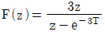
에 대응되는 라플라스 변환 함수는?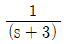
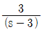
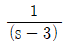
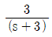
(정답률: 59%)
63. 그림과 같은 논리회로의 출력 Y는?
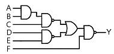
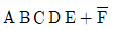
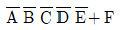
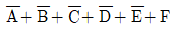
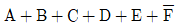
(정답률: 67%)
64. 안정한 제어시스템의 보드선도에서 이득여유는?
- -20~20dB 사이에 있는 크기(dB) 값이다.
- 0~20dB 사이에 있는 크기 선도의 길이이다.
- 위상이 0°가 되는 주파수에서 이득의 크기(dB)이다.
- 위상이 –180°가 되는 주파수에서 이득의 크기(dB)이다.
(정답률: 69%)
65. 그림과 같은 제어시스템의 전달함수
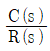
는?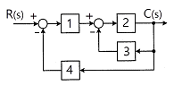
- 1/15
- 2/15
- 3/15
- 4/15
(정답률: 73%)
66. 다음과 같은 미분방정식으로 표현되는 제어시스템의 시스템 행렬 A는?
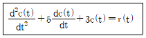
(정답률: 70%)
67. 그림의 신호흐름선도에서 전달함수 는?
(정답률: 46%)
68. 제어시스템의 개루프 전달함수가 로 주어질 때, 다음 중 인 경우 근궤적의 점근선이 실수축과 이루는 각 (°)은?
- 20°
- 60°
- 90°
- 120°
(정답률: 49%)
69. 단위 피드백 제어계에서 개루프 전달함수 G(s)가 다음과 같이 주어졌을 때 단위 계단 입력에 대한 정상상태 편차는?
- ０
- １
- ２
- ３
(정답률: 48%)
70. 전달함수가 인 제어기가 있다. 이 제어기는 어떤 제어기인가?
- 비례 미분 제어기
- 적분 제어기
- 비례 적분 제어기
- 비례 적분 미분 제어기
(정답률: 58%)
71. f(t)＝t2e-at를 라플라스 변환하면?
(정답률: 58%)
72. 3상 전류가 Ia＝10＋j3(A), Ib＝-5－j2(A), Ic＝-3＋j4일 때 정상분 전류의 크기는 약 몇 A 인가?
- 5
- 6.4
- 10.5
- 13.34
(정답률: 48%)
73. 선로의 단위 길이 당 인덕턴스, 저항, 정전용량, 누설 컨덕턴스를 각각 L, R, C, G라 하면 전파정수는?
(정답률: 68%)
74. v(t)＝3＋5√2sinωt＋10√2sin(3ωt－π/3)(V)의 실효값 크기는 약 몇 V인가?
- 9.6
- 10.6
- 11.6
- 12.6
(정답률: 67%)
75. 회로에서 0.5Ω 양단 전압(V)은 약 몇 V인가?
- 0.6
- 0.93
- 1.47
- 1.5
(정답률: 47%)
76. 그림은 회로에서 영상임피던스 Z01이 6Ω일 때, 저항 R의 값은 몇 Ω인가?
- 2
- 4
- 6
- 9
(정답률: 44%)
77. 8＋j6(Ω)인 임피던스에 13＋j20 (V)의 전압을 인가할 때 복소전력은 약 몇 VA인가?
- 127＋j34.1
- 12.7＋j55.5
- 45.5＋j34.1
- 45.5＋j55.5
(정답률: 41%)
78. 그림과 같이 결선된 회로의 단자 (a, b, c)에 선간전압 V(V)인 평형 3상 전압을 인가할 때 상전류 I(A)의 크기는?
(정답률: 43%)
79. Y 결선의 평형 3상 회로에서 선간전압 Vab와 상전압 Van의 관계로 옳은 것은? (단, )
(정답률: 41%)
80. RLC 직렬회로의 파라미터가 의 관계를 가진다면, 이 회로에 직류 전압을 인가하는 경우 과도 응답특성은?
- 무제동
- 과제동
- 부족제동
- 임계제동
(정답률: 59%)
5과목: 전기설비기술기준 및 판단기준
81. 백열전등 또는 방전등에 전기를 공급하는 옥내전로의 대지전압은 몇 V 이하이어야 하는가? (단, 백열전등 또는 방전등 및 이에 부속하는 전선은 사람이 접촉할 우려가 없도록 시설한 경우이다.)
- 60
- 110
- 220
- 300
(정답률: 68%)
82. 연료전지 및 태양전지 모듈의 절연내력시험을 하는 경우 충전부분과 대지 사이에 인가하는 시험전압은 얼마인가? (단, 연속하여 10분간 가하여 견디는 것이어야 한다.)
- 최대사용전압의 1.25배의 직류전압 또는 1배의 교류전압 (500V 미만으로 되는 경우에는 500V)
- 최대사용전압의 1.25배의 직류전압 또는 1.25배의 교류 전압 (500 V 미만으로 되는 경우에는 500V)
- 최대사용전압의 1.5배의 직류전압 또는 1배의 교류전압 (500V 미만으로 되는 경우에는 500V)
- 최대사용전압의 1.5배의 직류전압 또는 1.25배의 교류 전압 (500V 미만으로 되는 경우에는 500V)
(정답률: 47%)
83. 저압 수상전선로에 사용되는 전선은?
- 옥외 비닐 케이블
- 600V 비닐절연전선
- 600V 고무절연전선
- 클로로프렌 캡타이어 케이블
(정답률: 59%)
84. 교류 전차선 등과 삭도 또는 그 지주 사이에 이격거리를 몇 m 이상 이격하여야 하는가?(오류 신고가 접수된 문제입니다. 반드시 정답과 해설을 확인하시기 바랍니다.)
- 1
- 2
- 3
- 4
(정답률: 45%)
85. 출퇴표시등 회로에 전기를 공급하기 위한 변압기는 1차측 전로의 대지전압이 300V 이하, 2차측 전로의 사용전압은 몇 V 이하인 절연변압기이어야 하는가?(관련 규정 개정전 문제로 여기서는 기존 정답인 1번을 누르면 정답 처리됩니다. 자세한 내용은 해설을 참고하세요.)
- 60
- 80
- 100
- 150
(정답률: 49%)
86. 수소 냉각식 발전기 등의 시설기준으로 틀린 것은?
- 발전기안 또는 조상기안의 수소의 온도를 계측하는 장치를 시설할 것
- 발전기축의 밀봉부로부터 수소가 누설될 때 누설된 수소를 외부로 방출하지 않을 것
- 발전기안 또는 조상기안의 수소의 순도가 85 % 이하로 저하한 경우에 이를 경보하는 장치를 시설할 것
- 발전기 또는 조상기는 수소가 대기압에서 폭발하는 경우에 생기는 압력에 견디는 강도를 가지는 것일 것
(정답률: 50%)
87. 전개된 장소에서 저압 옥상전선로의 시설기준으로 적합하지 않은 것은?
- 전선은 절연전선을 사용하였다.
- 전선 지지점 간의 거리를 20m로 하였다.
- 전선은 지름 2.6㎜의 경동선을 사용하였다.
- 저압 절연전선과 그 저압 옥상 전선로를 시설하는 조영재와의 이격거리를 2m로 하였다.
(정답률: 57%)
88. 케이블 트레이 공사에 사용하는 케이블 트레이에 적합하지 않은 것은?
- 비금속제 케이블 트레이는 난연성 재료가 아니어도 된다.
- 금속재의 것은 적절한 방식처리를 한 것이거나 내식성 재료의 것이어야 한다.
- 금속제 케이블 트레이 계통은 기계적 및 전기적으로 완전 하게 접속하여야 한다.
- 케이블 트레이가 방화구획의 벽 등을 관통하는 경우에 관통부는 불연성의 물질로 충전하여야 한다.
(정답률: 66%)
89. 가공전선로의 지지물의 강도계산에 적용하는 풍압하중은 빙설이 많은 지방 이외의 지방에서 저온계절에는 어떤 풍압하중을 적용하는가? (단, 인가가 연접되어 있지 않다고 한다.)
- 갑종풍압하중
- 을종풍압하중
- 병종풍압하중
- 을종과 병종풍압하중을 혼용
(정답률: 47%)
90. 전개된 건조한 장소에서 400V 이상의 저압옥내배선을할 때 특별히 정해진 경우를 제외하고는 시공할 수 없는 공사는?
- 애자사용공사
- 금속덕트공사
- 버스덕트공사
- 합성수지몰드공사
(정답률: 34%)
91. 가공전선로의 지지물에 시설하는 지선으로 연선을 사용할 경우 소선은 최소 몇 가닥 이상이어야 하는가?
- 3
- 5
- 7
- 9
(정답률: 73%)
92. 440V 옥내 배선에 연결된 전동기 회로의 절연저항 최소값은 몇 MΩ인가?(관련 규정 개정전 문제로 여기서는 기존 정답인 3번을 누르면 정답 처리됩니다. 자세한 내용은 해설을 참고하세요.)
- 0.1
- 0.2
- 0.4
- 1
(정답률: 55%)
93. 태양전지 발전소에 시설하는 태양전지 모듈, 전선 및 개폐기 기타 기구의 시설기준에 대한 내용으로 틀린 것은?
- 충전부분은 노출되지 아니하도록 시설할 것
- 옥내에 시설하는 경우에는 전선을 케이블 공사로 시설할 수 있다.
- 태양전지 모듈의 프레임은 지지물과 전기적으로 완전하게 접속하여야 한다.
- 태양전지 모듈을 병렬로 접속하는 전로에는 과전류차단기를 시설하지 않아도 된다.
(정답률: 65%)
94. 지중 전선로를 직접 매설식에 의하여 시설할 때, 중량물의 압력을 받을 우려가 있는 장소에 저압 또는 고압의 지중전선을 견고한 트라프 기타 방호물에 넣지 않고도 부설할 수 있는 케이블은?
- PVC 외장 케이블
- 콤바인덕트 케이블
- 염화비닐 절연 케이블
- 폴리에틸렌 외장 케이블
(정답률: 65%)
95. 중성점 직접 접지식 전로에 접속되는 최대사용전압 161kV 인 3상 변압기 권선(성형결선)의 절연내력시험을 할 때접지시켜서는 안 되는 것은?
- 철심 및 외함
- 시험되는 변압기의 부싱
- 시험되는 권선의 중성점 단자
- 시험되지 않는 각 권선(다른 권선이 2개 이상 있는 경우에는 각 권선의 임의의 1단자)
(정답률: 42%)
96. 저압 가공전선로 또는 고압 가공전선로의 기설 가공 약전류 전선로가 병행하는 경우에는 유도작용에 의한 통신상의 장해가 생기지 아니하도록 전선과 기설 약전류 전선간의 이격거리는 몇 m 이상이어야 하는가? (단, 전기철도용 급전선로는 제외한다.)
- 2
- 4
- 6
- 8
(정답률: 47%)
97. 저압전로에서 그 전로에 지락이 생긴 경우 0.5초 이내에 자동적으로 전로를 차단하는 장치를 시설하는 경우에는 특별 제3종 접지공사의 접지저항 값은 자동 차단기의 정격감도 전류가 30mA 이하일 때 몇 Ω 이하로 하여야 하는가?(오류 신고가 접수된 문제입니다. 반드시 정답과 해설을 확인하시기 바랍니다.)
- 75
- 150
- 300
- 500
(정답률: 18%)
98. 특고압 가공전선로의 지지물에 첨가하는 통신선 보안장치에 사용되는 피뢰기의 동작전압은 교류 몇 V 이하인가?
- 300
- 600
- 1000
- 1500
(정답률: 48%)
99. 어느 유원지의 어린이 놀이기구인 유희용 전차에 전기를 공급하는 전로의 사용전압은 교류인 경우 몇 V 이하이어야 하는가?
- 20
- 40
- 60
- 100
(정답률: 47%)
100. 고압 가공전선을 시가지외에 시설할 때 사용되는 경동선의 굵기는 지름 몇 mm 이상인가?
- 2.6
- 3.2
- 4.0
- 5.0
(정답률: 45%)